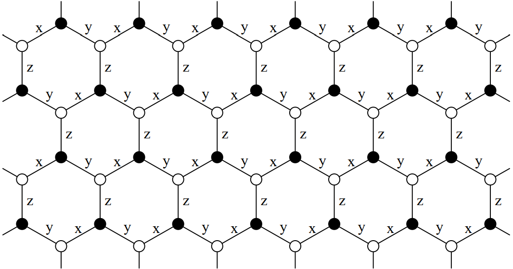

5. Couplings and Terms
Now we arrive at the final step toward completely describing a quantum lattice system: the terms that represent the couplings among different degrees of freedom.
5.1 Ingredients of Terms in Hamiltonians
In this package, the type Term is the representation of a term in a lattice Hamiltonian.
As is well-known, different quantum lattice models have different terms. For example, the Hubbard model consists of a usual hopping term $t\sum_{\langle ij\rangle}c^\dagger_ic_j + \text{h.c.}$ and a Hubbard term $U\sum_i c^\dagger_{i\uparrow} c_{i\uparrow} c^\dagger_{i\downarrow}c_{i\downarrow}$, while the transverse-field Ising model contains an Ising term $J\sum_{\langle ij\rangle}S^z_iS^z_j$ as well as a transverse-field term $h\sum_iS^x_i$. Despite the rich diversity of terms in quantum lattice models, they share common ingredients:
- Overall coefficient: Every term has an overall coefficient, e.g., the hopping amplitude $t$ for the usual hopping term, the Hubbard interaction strength $U$ for the Hubbard term, etc.
- Kind of bonds to be summed over: As a natural result of lattice symmetry, every term contains a summation over some kind of generic bonds, e.g., the usual hopping term sums over the nearest-neighbor bonds $\langle ij\rangle$, the Hubbard term sums over all individual points (namely the 1-point bonds), etc.
- Coupling pattern: In the body of the summation over bonds, every term contains a coupling pattern that can be represented by a certain combination of operators, e.g., the coupling pattern of the usual hopping term can be represented by $c^\dagger_ic_j$, of the Hubbard term can be represented by $c^\dagger_{i\uparrow} c_{i\uparrow} c^\dagger_{i\downarrow}c_{i\downarrow}$, etc.
- Hermiticity: To guarantee that the Hamiltonian is Hermitian, the Hermitian conjugate (h.c.) of non-Hermitian terms must be added, e.g., the Hermitian conjugate of the usual hopping term must be added in the expression of the lattice Hamiltonian, while that of the Hubbard term need not.
- Bond-dependent amplitude (optional): The amplitude of a term can depend on the generic bonds, e.g., the staggered local chemical potential $\Delta\sum_i(-1)^ic^\dagger_ic_i$ depends on the site index of a point, the $p+ip$ pairing potential $\Delta\sum_{\langle ij\rangle}e^{i\phi_{ij}}c^\dagger_ic^\dagger_j + \text{h.c.}$ depends on the azimuth angle $\phi_{ij}$ of the bond $\langle ij\rangle$, etc.
Such common ingredients determine the underlying organization of Term. In fact, all of them manifest themselves in the basic construction function of Term shown as follows:
Term{termkind}(
id::Symbol, value, bondkind, coupling, ishermitian::Bool;
amplitude::Union{Function, Nothing}=nothing
) where termkindwhere termkind must be a Symbol, value is the overall coefficient which should be real-valued, i.e., either a real number or a symbolic expression declared to be real (such as symbols("t", real=true)), bondkind specifies the bonds to be summed over, coupling specifies the coupling pattern of the term which can accept an instance of Coupling, or an iterator of Couplings, or a function that returns a Coupling or an iterator of Couplings, ishermitian is a boolean indicating whether the term is Hermitian, and the keyword argument amplitude specifies the bond dependency of the amplitude if it is not nothing. Here, the new type Coupling is the building block of the coupling pattern, which will be discussed in detail in the following section. Note that an extra id is also assigned to each term for fast lookup.
5.2 Coupling Patterns
Before discussing Term further, we first turn to the coupling patterns, which lie at the center of the construction of Terms.
5.2.1 Coupling: Building Block of Coupling Patterns
Coupling uses a set of Indexes together with a coefficient to represent the coupling pattern, as the following construction function implies:
Coupling([value, ]indexes::Index...)Here, when value is omitted, it will be set to 1.
Let's see a typical example, which represents the coupling pattern of the usual hopping term $t\sum_{⟨ij⟩}c^†_ic_j + h.c.$:
julia> Coupling(Index(1ˢᵗ, FockIndex(:, :, 2)), Index(2ⁿᵈ, FockIndex(:, :, 1)))
∑[𝕕⁺(1ˢᵗ, :, :) 𝕕(2ⁿᵈ, :, :)]There are several differences in the Indexes here compared to those introduced in Chapter 3:
- The
siteattributes are not the site indexes of the points in a lattice, instead, they are the ordinals of the points contained in a bond. In fact, in the expression of $c^\dagger_ic_j$, $i$ is always the first site of a bond while $j$ is always the second, thus, thesiteattributes here are1ˢᵗand2ⁿᵈfor the firstIndexand the secondIndex, respectively. Here,1ˢᵗand2ⁿᵈare instances ofOrdinal, and an arbitrary ordinal can be obtained by an integer followed by the corresponding special constants, e.g.,1ˢᵗ,2ⁿᵈ,3ʳᵈ,4ᵗʰ,5ᵗʰ, etc. In the REPL or in an editor with tab completion, these superscripts are typed as\^s<tab>\^t<tab>(ˢᵗ),\^n<tab>\^d<tab>(ⁿᵈ),\^r<tab>\^d<tab>(ʳᵈ) and\^t<tab>\^h<tab>(ᵗʰ); the constructorOrdinalis the ASCII alternative, e.g.,Ordinal(5) == 5ᵗʰ. - The
internalattributes are initialized by specialFockIndexinstances, which do not have the type parameter:for:bto specify the statistics, and whoseorbitalandspinattributes are initialized by the:operator rather than integers. Without the statistics of:for:b,FockIndexcan suit both fermionic and bosonic quantum lattice systems, as the coupling pattern of a usual hopping term is the same for both kinds of systems. Here,𝕕(\bbd<tab>) and𝕕⁺(\bbd<tab>\^+<tab>) are the functions that are convenient for constructing and displaying instances ofFockIndexsuitable for both fermionic and bosonic statistics. When the:operator is used in the initialization for either theorbitalor thespinattribute, the default rule applies in the coupling pattern, that orbitals or spins are summed diagonally, i.e., $c^\dagger_ic_j\equiv\sum_{\alpha\sigma}c^\dagger_{i\alpha\sigma}c_{j\alpha\sigma}$. This rule is in fact a tradition in the literature of condensed matter physics. This implicit summation in the construction of aCouplingis made explicit in its string representation by the $\sum$ symbol, as can be seen in the above example.
Similarly, the total spin of SpinIndex can be omitted during the construction of the coupling patterns of spin terms, meaning that it suits any allowable value of total spins, e.g., the coupling pattern of the spin-flip term of any total spin $J\sum_{⟨ij⟩}S^+_iS^-_j + h.c.$ is as follows:
julia> Coupling(1//2, Index(1ˢᵗ, SpinIndex('+')), Index(2ⁿᵈ, SpinIndex('-')))
1//2 𝕊(1ˢᵗ, '+') 𝕊(2ⁿᵈ, '-')Note that in this coupling pattern, there is no summation symbol ∑ in the string representation because all indexes are definite. Therefore, the summation symbol ∑ in the string representation of a coupling pattern only reflects the summation over local internal degrees of freedom, but not the summation over bonds.
The diagonal summation rule also applies to the direction attribute of PhononIndex if initialized by the : operator, e.g., the coupling pattern of the phonon kinetic term $\frac{1}{2M}\sum_i p^2_i$ can be constructed as:
julia> Coupling(𝕡(1ˢᵗ, :), 𝕡(1ˢᵗ, :))
∑[𝕡(1ˢᵗ, :) 𝕡(1ˢᵗ, :)]Of course, more specific coupling patterns can be initialized with more specific internal indexes, e.g., the coupling pattern of the orbital-1 spin-down hopping term of fermions $t\sum_{⟨ij⟩}c^†_{i, 1, ↓}c_{j, 1, ↓} + h.c.$ is
julia> Coupling(𝕔⁺(1ˢᵗ, 1, -1//2), 𝕔(2ⁿᵈ, 1, -1//2))
𝕔⁺(1ˢᵗ, 1, -1//2) 𝕔(2ⁿᵈ, 1, -1//2)When all Indexes are of the same type, a Coupling can be initialized in different simpler ways:
# Coupling pattern for Fock systems
Coupling{F}(
[value, ]
sites::Union{NTuple{N, Ordinal}, Colon},
orbitals::Union{NTuple{N, Int}, Colon},
spins::Union{NTuple{N, Union{Rational{Int}, Int}}, Colon},
nambus::NTuple{N, Int}
) where {N, F<:FockIndex}
# Coupling pattern for spin systems
Coupling{S}(
[value, ]
sites::Union{NTuple{N, Ordinal}, Colon},
tags::NTuple{N, Char}
) where {N, S<:SpinIndex}
# Coupling pattern for phonon systems
Coupling{P}(
[value, ]
sites::Union{NTuple{N, Ordinal}, Colon},
directions::Union{NTuple{N, Char}, Colon}
) where {N, P<:Union{PhononIndex{:u}, PhononIndex{:p}}}Here, as usual, when value is omitted, the coefficient of the Coupling will be set to 1.
See examples:
julia> Coupling{FockIndex}((1ˢᵗ, 1ˢᵗ, 2ⁿᵈ, 2ⁿᵈ), :, :, (2, 2, 1, 1))
∑[𝕕⁺(1ˢᵗ, :, :) 𝕕⁺(1ˢᵗ, :, :) 𝕕(2ⁿᵈ, :, :) 𝕕(2ⁿᵈ, :, :)]
julia> Coupling{SpinIndex}((1ˢᵗ, 2ⁿᵈ), ('z', 'z'))
𝕊(1ˢᵗ, 'z') 𝕊(2ⁿᵈ, 'z')
julia> Coupling{PhononIndex{:p}}((1ˢᵗ, 1ˢᵗ), :)
∑[𝕡(1ˢᵗ, :) 𝕡(1ˢᵗ, :)]A Coupling can be multiplied with a number:
julia> coupling = Coupling(1//2, 𝕊(1ˢᵗ, '+'), 𝕊(2ⁿᵈ, '-'));
julia> coupling * 3
3//2 𝕊(1ˢᵗ, '+') 𝕊(2ⁿᵈ, '-')
julia> 3 * coupling
3//2 𝕊(1ˢᵗ, '+') 𝕊(2ⁿᵈ, '-')Two Couplings can be multiplied together:
julia> cp₁ = Coupling{FockIndex}((1ˢᵗ, 1ˢᵗ), :, (1//2, 1//2), (2, 1));
julia> cp₂ = Coupling{FockIndex}((1ˢᵗ, 1ˢᵗ), :, (-1//2, -1//2), (2, 1));
julia> cp₁ * cp₂
∑[𝕕⁺(1ˢᵗ, :, 1//2) 𝕕(1ˢᵗ, :, 1//2)] ⊗ ∑[𝕕⁺(1ˢᵗ, :, -1//2) 𝕕(1ˢᵗ, :, -1//2)]Note that due to the implicit summation of the orbital index in the coupling pattern, the above product is not equal to the coupling pattern of the Hubbard term $U\sum_i c^\dagger_{i\uparrow} c_{i\uparrow} c^\dagger_{i\downarrow}c_{i\downarrow}$:
julia> cp₁ = Coupling{FockIndex}((1ˢᵗ, 1ˢᵗ), :, (1//2, 1//2), (2, 1));
julia> cp₂ = Coupling{FockIndex}((1ˢᵗ, 1ˢᵗ), :, (-1//2, -1//2), (2, 1));
julia> cp = Coupling{FockIndex}((1ˢᵗ, 1ˢᵗ, 1ˢᵗ, 1ˢᵗ), :, (1//2, 1//2, -1//2, -1//2), (2, 1, 2, 1)) # Hubbard coupling pattern
∑[𝕕⁺(1ˢᵗ, :, 1//2) 𝕕(1ˢᵗ, :, 1//2) 𝕕⁺(1ˢᵗ, :, -1//2) 𝕕(1ˢᵗ, :, -1//2)]
julia> cp == cp₁ * cp₂
false5.2.2 Default Rules in Coupling Patterns
As has been shown in the previous subsection, some attributes of the internal attribute of Index can be initialized by the : operator during the construction of a coupling pattern. For the orbital and spin attributes of FockIndex, and for the direction attribute of PhononIndex, the default rule is that such indexes will be summed diagonally in the coupling pattern. In fact, the site attribute of Index also supports the : initialization, but with different default rules.
Let's return to the example of the coupling pattern of the usual hopping term, i.e., $c^\dagger_ic_j$. Apparently, the site attributes are always (1ˢᵗ, 2ⁿᵈ) as long as the coupling pattern belongs to an usual hopping term. In fact, for most common terms in condensed matter, such attributes in the coupling pattern usually depend only on their kinds rather than the concrete instances. Therefore, we could define them outside the construction functions of Coupling or Term by separate functions, and just leave them to the default rules.
All predefined default rules can be found in the section of Specialized Terms. If you need a term that is beyond such default rules, or you just think that such rules are too complicated to remember, it is recommended to explicitly write them out in the coupling pattern.
5.2.3 Coupling Patterns with Constraints
The default rules cannot handle complicated summation conditions on the local internal degrees of freedom in the coupling pattern. For example, for the interorbital-interspin Hubbard term in a multi-orbital Hubbard model, which can be written as $U\sum_i\sum_{α<β\,\text{and}\,σ≠σ′} c^†_{iασ} c_{iασ} c^†_{iβσ′} c_{iβσ′}$, it is impossible to specify its coupling pattern by a single Coupling in the usual way as introduced in previous subsections. Although the coupling pattern of a Term can also be an iterator of Couplings, it would be quite complicated to write down all the expressions by the manual expansion of the summation over $α$, $β$, $σ$ and $σ′$. In fact, we have provided a simple way to specify a coupling pattern like this with the help of the macro @pattern:
@pattern(index₁, index₂, ...[; constraint=...])In the @pattern macro, any symbol that appears in place of an attribute of an index, such as α, β, σ and σ′ below, declares a summation variable, and the coupling pattern is summed over all allowed values of these variables; the optional keyword argument constraint restricts the summation to the configurations that satisfy it. For example, the coupling pattern of the above interorbital-interspin Hubbard term can be constructed as follows:
julia> Coupling(@pattern(
𝕕⁺(:, α, σ), 𝕕(:, α, σ), 𝕕⁺(:, β, σ′), 𝕕(:, β, σ′);
constraint=α<β && σ≠σ′
)
)
∑[𝕕⁺(:, α, σ) 𝕕(:, α, σ) 𝕕⁺(:, β, σ′) 𝕕(:, β, σ′)](α < β && σ ≠ σ′)The keyword argument constraint can be omitted if there are no constraints in the summation, e.g., for a special kind of phonon potential $V\sum_{⟨ij⟩}\frac{1}{2}\sum_{μν}u_i^μ u_j^ν$, the coupling pattern can be written as
julia> Coupling(1//2, @pattern 𝕦(:, μ) 𝕦(:, ν))
1//2 ∑[𝕦(:, μ) 𝕦(:, ν)]The Indexes in the @pattern macro can be of different types, e.g., for a fabricated term just for illustration $λ\sum_{⟨ij⟩}\frac{1}{2}\sum_{αβσ} c^\dagger_{iασ} c_{iβσ} u^x_i$, where itinerant electrons are coupled to lattice vibrations, the coupling pattern is
julia> Coupling(1//2, @pattern 𝕕⁺(1ˢᵗ, α, σ) 𝕕(1ˢᵗ, β, σ) 𝕦(1ˢᵗ, x))
1//2 ∑[𝕕⁺(1ˢᵗ, α, σ) 𝕕(1ˢᵗ, β, σ) 𝕦(1ˢᵗ, x)]In principle, the couplings of hybrid quantum lattice systems that couple different categories of internal degrees of freedom can be initialized in these ways. For more discussions on hybrid systems, see the Hybrid Systems topic.
One more remark. The constraints can only act on the internal attribute but not on the site attribute of Index. Recall that the site attribute of Index in the coupling pattern is the ordinal of a point in a bond but not the site index of a point in a lattice. Constraint on it makes no sense.
5.2.4 Coupling Patterns with Matrices Acting on Sub Internal Spaces
At times, the coupling pattern of a term is not compact enough to be represented by a single Coupling. Then as has been pointed out, they can be represented by an iterator of Couplings. A particularly common case in condensed matter physics is that it can be represented by a matrix acting on specific sub internal spaces, e.g., a spin-dependent hopping $t\sum_{⟨ij⟩}c^\dagger_i σᶻ c_j + h.c.$ where $σᶻ$ acts on the local spin space. The type MatrixCoupling, a vector of Coupling, is designed for such cases and can be constructed by the following functions:
# Fock systems
MatrixCoupling{F}(
sites::Union{NTuple{2, Ordinal}, Colon},
orbital::Union{AbstractMatrix, Colon},
spin::Union{AbstractMatrix, Colon},
nambu::AbstractMatrix
) where {F<:FockIndex}
# Spin systems
MatrixCoupling{S}(
sites::Union{NTuple{2, Ordinal}, Colon},
matrix::AbstractMatrix
) where {S<:SpinIndex}
# Phonon systems
MatrixCoupling{P}(
sites::Union{NTuple{2, Ordinal}, Colon},
matrix::AbstractMatrix
) where {P<:PhononIndex{:u}}Besides, convenience functions build the same coupling patterns with the subspace matrices supplied directly.
For Fock systems, twelve functions are provided, all with the signature (sites, orbital, spin). The nambu matrix is implied by the function name:
| Functions | Implied nambu | Typical scenario |
|---|---|---|
𝕔⁺𝕔, 𝕒⁺𝕒, 𝕕⁺𝕕 | creation–annihilation | density/hopping-type couplings, e.g., spin-orbital couplings |
𝕔⁺𝕔⁺, 𝕒⁺𝕒⁺, 𝕕⁺𝕕⁺ | creation–creation | pairing-creation couplings, e.g., superconducting pairings |
𝕔𝕔, 𝕒𝕒, 𝕕𝕕 | annihilation–annihilation | pairing-annihilation couplings, e.g., superconducting pairings |
𝕔𝕔⁺, 𝕒𝕒⁺, 𝕕𝕕⁺ | annihilation–creation | anomalous density/hopping-type couplings, e.g., spin-orbital couplings in the "hole" space of a BdG Hamiltonian |
Here 𝕔 is for fermionic (:f), 𝕒 for bosonic (:b) and 𝕕 for statistics-unspecified (:) Fock spaces.
For spin and phonon systems, one convenience function each is provided:
| Function | Signature | Typical scenario |
|---|---|---|
𝕊ᵀ𝕊 | (sites, matrix) | bilinear spin couplings with matrix acting on the local $(S^x, S^y, S^z)^T$ vector space, e.g., anisotropic exchange interactions |
𝕦ᵀ𝕦 | (sites, matrix) | harmonic phonon couplings with matrix acting on the local $(u^x[, u^y[, u^z]])^T$ vector space, i.e., the dynamical matrix, depending on the dimension of the lattice vibrations |
The complete docstrings of all these functions are collected in the manual.
The following codes construct the coupling pattern of the above spin-dependent hopping example:
julia> mc = MatrixCoupling{FockIndex}(:, :, σᶻ, σ¹¹);
julia> length(mc)
2
julia> mc[1]
∑[𝕕⁺(:, :, 1//2) 𝕕(:, :, 1//2)]
julia> mc[2]
- ∑[𝕕⁺(:, :, -1//2) 𝕕(:, :, -1//2)]
julia> mc == 𝕕⁺𝕕(:, :, σᶻ)
trueHere, σᶻ is a constant of one of the following Pauli matrices:
const σ⁰ = SparseMatrixCSC([1 0; 0 1])
const σˣ = SparseMatrixCSC([0 1; 1 0])
const σʸ = SparseMatrixCSC([0 -1im; 1im 0])
const σᶻ = SparseMatrixCSC([1 0; 0 -1])
const σ⁺ = SparseMatrixCSC([0 1; 0 0])
const σ⁻ = SparseMatrixCSC([0 0; 1 0])
const σ¹¹ = SparseMatrixCSC([1 0; 0 0])
const σ¹² = SparseMatrixCSC([0 1; 0 0])
const σ²¹ = SparseMatrixCSC([0 0; 1 0])
const σ²² = SparseMatrixCSC([0 0; 0 1])Note in the nambu space, σ¹¹, σ¹², σ²¹ and σ²² correspond to 𝕔⁺𝕔/𝕒⁺𝕒/𝕕⁺𝕕, 𝕔⁺𝕔⁺/𝕒⁺𝕒⁺/𝕕⁺𝕕⁺, 𝕔𝕔/𝕒𝕒/𝕕𝕕 and 𝕔𝕔⁺/𝕒𝕒⁺/𝕕𝕕⁺, respectively:
julia> MatrixCoupling{FockIndex{:f}}(:, :, :, σ¹¹) == 𝕔⁺𝕔(:, :, :)
true
julia> MatrixCoupling{FockIndex{:f}}(:, :, :, σ¹²) == 𝕔⁺𝕔⁺(:, :, :)
true
julia> MatrixCoupling{FockIndex{:f}}(:, :, :, σ²¹) == 𝕔𝕔(:, :, :)
true
julia> MatrixCoupling{FockIndex{:f}}(:, :, :, σ²²) == 𝕔𝕔⁺(:, :, :)
true
julia> MatrixCoupling{FockIndex{:b}}(:, :, :, σ¹¹) == 𝕒⁺𝕒(:, :, :)
true
julia> MatrixCoupling{FockIndex{:b}}(:, :, :, σ¹²) == 𝕒⁺𝕒⁺(:, :, :)
true
julia> MatrixCoupling{FockIndex{:b}}(:, :, :, σ²¹) == 𝕒𝕒(:, :, :)
true
julia> MatrixCoupling{FockIndex{:b}}(:, :, :, σ²²) == 𝕒𝕒⁺(:, :, :)
true
julia> MatrixCoupling{FockIndex}(:, :, :, σ¹¹) == 𝕕⁺𝕕(:, :, :)
true
julia> MatrixCoupling{FockIndex}(:, :, :, σ¹²) == 𝕕⁺𝕕⁺(:, :, :)
true
julia> MatrixCoupling{FockIndex}(:, :, :, σ²¹) == 𝕕𝕕(:, :, :)
true
julia> MatrixCoupling{FockIndex}(:, :, :, σ²²) == 𝕕𝕕⁺(:, :, :)
trueMatrixCouplings can be multiplied or summed.
For one example, for the nearest-neighbor spin exchange interactions of itinerant fermions $J\sum_{⟨ij⟩}c^†_i\vec{σ}_ic_i ⋅ c^†_j\vec{σ}_jc_j$ where $\vec{σ}_i=(σ^x_i, σ^y_i, σ^z_i)^T$ acts on the local spin space at site $i$, the coupling pattern can be constructed as follows:
julia> mc₁ = 𝕕⁺𝕕(:, :, σ⁺);
julia> mc₂ = 𝕕⁺𝕕(:, :, σ⁻);
julia> mc₃ = 𝕕⁺𝕕(:, :, σᶻ);
julia> coupling = 1//2*mc₁*mc₂ + 1//2*mc₂*mc₁ + mc₃*mc₃;
julia> collect(coupling)
6-element Vector{Coupling}:
1//2 ∑[𝕕⁺(:, :, 1//2) 𝕕(:, :, -1//2)] ⊗ ∑[𝕕⁺(:, :, -1//2) 𝕕(:, :, 1//2)]
1//2 ∑[𝕕⁺(:, :, -1//2) 𝕕(:, :, 1//2)] ⊗ ∑[𝕕⁺(:, :, 1//2) 𝕕(:, :, -1//2)]
∑[𝕕⁺(:, :, 1//2) 𝕕(:, :, 1//2)] ⊗ ∑[𝕕⁺(:, :, 1//2) 𝕕(:, :, 1//2)]
- ∑[𝕕⁺(:, :, -1//2) 𝕕(:, :, -1//2)] ⊗ ∑[𝕕⁺(:, :, 1//2) 𝕕(:, :, 1//2)]
- ∑[𝕕⁺(:, :, 1//2) 𝕕(:, :, 1//2)] ⊗ ∑[𝕕⁺(:, :, -1//2) 𝕕(:, :, -1//2)]
∑[𝕕⁺(:, :, -1//2) 𝕕(:, :, -1//2)] ⊗ ∑[𝕕⁺(:, :, -1//2) 𝕕(:, :, -1//2)]For another example, for the onsite spin-orbital coupling of the $(d_{yz}, d_{xz}, d_{xy})^T$ $t_2g$ orbitals $λ\sum_i c^\dagger_i \vec{L}_i\cdot\vec{σ}_i c_i$ where $\vec{L}_i=(L^x_i, L^y_i, L^z_i)^T$ acts on the local orbital space and $\vec{σ}_i=(σ^x_i, σ^y_i, σ^z_i)^T$ acts on the local spin space, the coupling pattern can be constructed as follows:
julia> mc₁ = 𝕕⁺𝕕(:, Lˣ, σˣ);
julia> mc₂ = 𝕕⁺𝕕(:, Lʸ, σʸ);
julia> mc₃ = 𝕕⁺𝕕(:, Lᶻ, σᶻ);
julia> coupling = mc₁ + mc₂ + mc₃;
julia> collect(coupling)
12-element Vector{Coupling}:
-1im 𝕕⁺(:, 3, -1//2) 𝕕(:, 2, 1//2)
1im 𝕕⁺(:, 2, -1//2) 𝕕(:, 3, 1//2)
-1im 𝕕⁺(:, 3, 1//2) 𝕕(:, 2, -1//2)
1im 𝕕⁺(:, 2, 1//2) 𝕕(:, 3, -1//2)
- 𝕕⁺(:, 3, -1//2) 𝕕(:, 1, 1//2)
𝕕⁺(:, 1, -1//2) 𝕕(:, 3, 1//2)
𝕕⁺(:, 3, 1//2) 𝕕(:, 1, -1//2)
- 𝕕⁺(:, 1, 1//2) 𝕕(:, 3, -1//2)
-1im 𝕕⁺(:, 2, 1//2) 𝕕(:, 1, 1//2)
1im 𝕕⁺(:, 1, 1//2) 𝕕(:, 2, 1//2)
1im 𝕕⁺(:, 2, -1//2) 𝕕(:, 1, -1//2)
-1im 𝕕⁺(:, 1, -1//2) 𝕕(:, 2, -1//2)Here, Lˣ, Lʸ and Lᶻ are constants of the following three-dimensional rotation generators acting on the local orbital space:
const Lˣ = SparseMatrixCSC([0 0 0; 0 0 1im; 0 -1im 0])
const Lʸ = SparseMatrixCSC([0 0 -1im; 0 0 0; 1im 0 0])
const Lᶻ = SparseMatrixCSC([0 1im 0; -1im 0 0; 0 0 0])5.2.5 Bond-Dependent Coupling Patterns
Sometimes, the coupling pattern of a term could be dependent on the bonds. For example, for the Kitaev term on the honeycomb lattice $K\sum_{⟨ij⟩_γ} S_i^γS_j^γ$ where the nearest-neighbor spin exchange interaction depends on the direction of the nearest-neighbor bonds, as illustrated by the following picture,

the coupling pattern can be represented by the following function:function kitaev(bond::Bond)
ϕ = azimuth(rcoordinate(bond)) # get the azimuth angle of a bond in radians
any(≈(ϕ), (π/6, 7π/6)) && return Coupling{𝕊}(:, ('x', 'x'))
any(≈(ϕ), (5π/6, 11π/6)) && return Coupling{𝕊}(:, ('y', 'y'))
any(≈(ϕ), (π/2, 3π/2)) && return Coupling{𝕊}(:, ('z', 'z'))
error("kitaev error: wrong input bond.")
endNote that the type parameter of Coupling here is the constructor 𝕊 itself rather than SpinIndex: besides a concrete InternalIndex subtype, Coupling{F} also accepts any function F that constructs an Index from a site and the internal fields, which is how the total spin can remain unspecified at this stage.
Note in all cases, the function to specify a bond dependent coupling pattern can only accept an instance of Bond as its sole argument, but it can return either a Coupling or an iterator of Couplings.
5.3 Bond-Dependent Amplitude
Similar to bond-dependent coupling patterns, the bond-dependent amplitude of a term can be achieved by a function that only accepts an instance of Bond as its sole argument and returns a number. For example, for the staggered local chemical potential $Δ\sum_i(-1)^ic_i^†c_i$, the bond-dependent amplitude can be specified as follows:
function staggered(bond::Bond)
@assert length(bond)==1 "staggered error: wrong input bond."
return (-1)^bond[1].site
endNote that bond[1].site here denotes the site index of a point within the origin unitcell (Section 2.2), which should not be confused with the ordinal of a point within a bond used for the site attribute of an Index in a coupling pattern (Section 5.2.1).
5.3.1 Terms with Complex Coefficients
One special case deserves attention: a term with a complex coefficient. In the construction function of Term, a complex number with a nonzero imaginary part cannot be used to specify the overall coefficient of a term. This is because the Hamiltonian of a quantum lattice system must be Hermitian and a complex coefficient must be accompanied by its complex conjugate. Thus, the positive direction of the phase must be appointed, resulting in a bond-dependent amplitude. Then, it is always feasible to extract a real overall factor as the final coefficient and leave the remaining part to the bond-dependent amplitude function. For example, for the p+ip pairing potential $Δ\sum_{⟨ij⟩}e^{iϕ_{ij}}c^†_ic^†_j + h.c.$, the coefficient is a pure imaginary number along the y direction, and the bond-dependent amplitude of this term can be specified as follows:
function pip_potential(bond::Bond)
ϕ = azimuth(rcoordinate(bond))
return exp(1im*ϕ)
end5.3.2 Principles of the Partition of Coefficients
As has been shown but not explicitly stated, in general, the coefficient of a term is partitioned into three parts in Term, the first part is the overall coefficient which must be a real number and is specified by the value argument in the construction function, the second part is the coefficient occurring in the coupling pattern, and the last part is handled by the bond-dependent amplitude function. Then there is an ambiguity about how these three parts should be partitioned. Here are the recommended principles:
- The overall real coefficient should contain as much as possible of the coefficient of the term that can be put in front of the summation over bonds.
- The coefficient of a coupling pattern should be determined by traditions (e.g., $±i$ in the $σʸ$ Pauli matrix), otherwise should be 1.
- The bond-dependent amplitude should not contain the tuning parameters of a quantum lattice model.
If the coefficient of a complicated term cannot fulfill the above principles at the same time, then you should consider splitting it into several terms. A simple check of the number of terms is that in principle it should be equal to the number of tunable parameters of the quantum lattice model under study.
5.4 Specialized Terms
For each kind of terms, some of the input parameters of the basic construction function are in fact fixed or have default values, e.g., the usual hopping term is always non-Hermitian while the Hubbard term is always Hermitian. Therefore, for each common kind of terms in condensed matter physics, it is more convenient to define the specialized construction function. In the following subsections we will list the predefined specialized terms.
5.4.1 Terms for Complex Fermionic/Bosonic Systems
# termkind = :Onsite
# bondkind = 0
Onsite(
id::Symbol,
value,
coupling=Coupling(𝕕⁺(:, :, :), 𝕕(:, :, :));
ishermitian::Bool=true,
amplitude::Union{Function, Nothing}=nothing
)
# termkind = :Hopping
# ishermitian = false
Hopping(
id::Symbol,
value,
bondkind,
coupling=Coupling(𝕕⁺(:, :, :), 𝕕(:, :, :));
amplitude::Union{Function, Nothing}=nothing
)
# termkind = :Pairing
# ishermitian = false
Pairing(id::Symbol, value, bondkind, coupling; amplitude::Union{Function, Nothing}=nothing)
# termkind = :Hubbard
# bondkind = 0
# coupling = Coupling(𝕕⁺(:, :, 1//2), 𝕕(:, :, 1//2), 𝕕⁺(:, :, -1//2), 𝕕(:, :, -1//2))
# ishermitian = true
Hubbard(id::Symbol, value; amplitude::Union{Function, Nothing}=nothing)
# termkind = :InterOrbitalInterSpin
# bondkind = 0
# coupling = Coupling(@pattern(
# 𝕕⁺(:, α, σ), 𝕕(:, α, σ), 𝕕⁺(:, β, σ′), 𝕕(:, β, σ′);
# constraint=α<β && σ≠σ′
# ))
# ishermitian = true
InterOrbitalInterSpin(id::Symbol, value; amplitude::Union{Function, Nothing}=nothing)
# termkind = :InterOrbitalIntraSpin
# bondkind = 0
# coupling = Coupling(@pattern(
# (𝕕⁺(:, α, σ), 𝕕(:, α, σ), 𝕕⁺(:, β, σ), 𝕕(:, β, σ);
# constraint=α<β
# ))
# ishermitian = true
InterOrbitalIntraSpin(id::Symbol, value; amplitude::Union{Function, Nothing}=nothing)
# termkind = :SpinFlip
# bondkind = 0
# coupling = Coupling(@pattern(
# 𝕕⁺(:, α, 1//2), 𝕕⁺(:, β, -1//2), 𝕕(:, α, -1//2), 𝕕(:, β, 1//2);
# constraint=α<β
# ))
# ishermitian = false
SpinFlip(id::Symbol, value; amplitude::Union{Function, Nothing}=nothing)
# termkind = :PairHopping
# bondkind = 0
# coupling = Coupling(@pattern(
# 𝕕⁺(:, α, 1//2), 𝕕⁺(:, α, -1//2), 𝕕(:, β, -1//2), 𝕕(:, β, 1//2);
# constraint=α<β
# ))
# ishermitian = false
PairHopping(id::Symbol, value; amplitude::Union{Function, Nothing}=nothing)
# termkind = :Coulomb
Coulomb(
id::Symbol,
value,
bondkind,
coupling=Coupling(𝕕⁺(:, :, :), 𝕕(:, :, :))^2;
ishermitian::Bool=true,
amplitude::Union{Function, Nothing}=nothing
)The default rules for such terms, when the site attribute of Index and the orbital, spin and nambu attributes of FockIndex are initialized by the : operator, are listed as follows:
| site | orbital | spin | |
|---|---|---|---|
Onsite | (1ˢᵗ, 1ˢᵗ) | diagonal | diagonal |
Hopping | (1ˢᵗ, 2ⁿᵈ) | diagonal | diagonal |
Pairing | (1ˢᵗ, 1ˢᵗ)/(1ˢᵗ, 2ⁿᵈ) | diagonal | diagonal |
Hubbard | (1ˢᵗ, 1ˢᵗ, 1ˢᵗ, 1ˢᵗ) | diagonal | |
InterOrbitalInterSpin | (1ˢᵗ, 1ˢᵗ, 1ˢᵗ, 1ˢᵗ) | ||
InterOrbitalIntraSpin | (1ˢᵗ, 1ˢᵗ, 1ˢᵗ, 1ˢᵗ) | ||
SpinFlip | (1ˢᵗ, 1ˢᵗ, 1ˢᵗ, 1ˢᵗ) | ||
PairHopping | (1ˢᵗ, 1ˢᵗ, 1ˢᵗ, 1ˢᵗ) | ||
Coulomb | (1ˢᵗ, 1ˢᵗ, 2ⁿᵈ, 2ⁿᵈ) | diagonal | diagonal |
- For the
Pairingterm, thesiteattributes will be(1ˢᵗ, 1ˢᵗ)whenbondkind=0, otherwise(1ˢᵗ, 2ⁿᵈ). - Blank cells in the above table mean that the corresponding attributes have been explicitly specified by the specialized construction functions. See the comments of the above code block in this subsection.
5.4.2 Terms for SU(2) Spin Systems
Standard concrete spin terms are summarized as follows:
# termkind = :Zeeman
# bondkind = 0
# ishermitian = true
Zeeman(
id::Symbol, value, direction::Char, g::Number=1;
amplitude::Union{Function, Nothing}=nothing
)
Zeeman(
id::Symbol,
value,
direction::Union{AbstractVector{<:Number}, Tuple{Number, Number}},
g::Union{Number, AbstractMatrix{<:Number}}=1;
unit::Symbol=:degree,
amplitude::Union{Function, Nothing}=nothing
)
# termkind = :SingleIonAnisotropy
# bondkind = 0
# ishermitian = true
SingleIonAnisotropy(
id::Symbol, value, direction::Char;
amplitude::Union{Function, Nothing}=nothing
)
SingleIonAnisotropy(
id::Symbol, value, matrix::AbstractMatrix{<:Number};
amplitude::Union{Function, Nothing}=nothing
)
# termkind = :Ising
# ishermitian = true
Ising(
id::Symbol, value, bondkind, direction::Char;
amplitude::Union{Function, Nothing}=nothing
)
# termkind = :Heisenberg
# ishermitian = true
Heisenberg(
id::Symbol, value, bondkind;
form::Symbol=Symbol("+-z"), amplitude::Union{Function, Nothing}=nothing
)
# termkind = :Kitaev
# ishermitian = true
Kitaev(
id::Symbol, value, bondkind;
x::AbstractVector{<:Union{Number, Tuple{Number, Number}, AbstractVector{<:Number}}},
y::AbstractVector{<:Union{Number, Tuple{Number, Number}, AbstractVector{<:Number}}},
z::AbstractVector{<:Union{Number, Tuple{Number, Number}, AbstractVector{<:Number}}},
unit::Symbol=:degree,
amplitude::Union{Function, Nothing}=nothing
)
# termkind = :Γ
# ishermitian = true
Γ(
id::Symbol, value, bondkind;
x::AbstractVector{<:Union{Number, Tuple{Number, Number}, AbstractVector{<:Number}}},
y::AbstractVector{<:Union{Number, Tuple{Number, Number}, AbstractVector{<:Number}}},
z::AbstractVector{<:Union{Number, Tuple{Number, Number}, AbstractVector{<:Number}}},
unit::Symbol=:degree,
amplitude::Union{Function, Nothing}=nothing
)
# termkind = :Γ′
# ishermitian = true
Γ′(
id::Symbol, value, bondkind;
x::AbstractVector{<:Union{Number, Tuple{Number, Number}, AbstractVector{<:Number}}},
y::AbstractVector{<:Union{Number, Tuple{Number, Number}, AbstractVector{<:Number}}},
z::AbstractVector{<:Union{Number, Tuple{Number, Number}, AbstractVector{<:Number}}},
unit::Symbol=:degree,
amplitude::Union{Function, Nothing}=nothing
)
# termkind = :DM
# ishermitian = true
DM(
id::Symbol,
value,
bondkind,
vectors::Pair{<:AbstractVector{<:Union{Number, Tuple{Number, Number}, AbstractVector{<:Number}}}, <:Union{Char, AbstractVector{<:Number}}}...;
unit::Symbol=:degree,
amplitude::Union{Function, Nothing}=nothing
)Beyond the above standard concrete terms, the generic spin term can be used:
# termkind = :SpinTerm
# ishermitian = true
SpinTerm(id::Symbol, value, bondkind, coupling; amplitude::Union{Function, Nothing}=nothing)Here, only the site attribute of Index can be initialized by the : operator. Depending on its rank (i.e. the number of Indexes in the coupling pattern) and the length of the bonds to be summed over, it will be (1ˢᵗ, 1ˢᵗ, ...) when the bond length is 1 and (1ˢᵗ, 2ⁿᵈ, 1ˢᵗ, 2ⁿᵈ...) when the bond length is 2. For other generic bonds with more points, no default rule exists.
5.4.3 Terms for Phononic Systems
# termkind = :Kinetic
# bondkind = 0
# coupling = Coupling(𝕡(:, :), 𝕡(:, :))
# ishermitian = true
Kinetic(id::Symbol, value; amplitude::Union{Function, Nothing}=nothing)
# termkind = :Hooke
# ishermitian = true
Hooke(id::Symbol, value, bondkind; amplitude::Union{Function, Nothing}=nothing)
# termkind = :Elastic
# ishermitian = true
# default rules: (1ˢᵗ, 2ⁿᵈ) for `site` and diagonal for `direction`
Elastic(id::Symbol, value, bondkind, coupling; amplitude::Union{Function, Nothing}=nothing)For Elastic, the site attribute of Index and the direction attribute of PhononIndex{:u} can be initialized by the : operator. The default rules are also summarized in the comments of the above code block.
5.5 Expand Terms to Obtain Operators
Recall from the note in Chapter 4 that a single Term is not a single operator: it expands into many Operators, one for each bond it acts on and for each configuration of the summed internal degrees of freedom. To obtain these operators, the expand function exported by this package can be used as follows:
expand(term::Term, bond::Bond, hilbert::Hilbert) -> Operators
expand(term::Term, bonds::AbstractVector{<:Bond}, hilbert::Hilbert) -> OperatorsLet's see a simple example of the usual hopping term:
julia> t = Hopping(:t, 2.0, 1);
julia> bond = Bond(1, Point(1, [0.0], [0.0]), Point(2, [0.5], [0.0]));
julia> hilbert = Hilbert(1=>Fock{:f}(1, 2), 2=>Fock{:f}(1, 2));
julia> expand(t, bond, hilbert)
Operators with 4 Operator
Operator(2.0, 𝕔⁺(1, 1, -1//2, [0.0], [0.0]), 𝕔(2, 1, -1//2, [0.5], [0.0]))
Operator(2.0, 𝕔⁺(2, 1, -1//2, [0.5], [0.0]), 𝕔(1, 1, -1//2, [0.0], [0.0]))
Operator(2.0, 𝕔⁺(1, 1, 1//2, [0.0], [0.0]), 𝕔(2, 1, 1//2, [0.5], [0.0]))
Operator(2.0, 𝕔⁺(2, 1, 1//2, [0.5], [0.0]), 𝕔(1, 1, 1//2, [0.0], [0.0]))The expansion contains four operators: the summation over the two spin species contributes a factor of two, and the Hermitian conjugate, which is added automatically because a Hopping term is non-Hermitian, contributes another factor of two.
When a bond and a term do not match each other, the expand function will return an empty Operators:
julia> t = Hopping(:t, 1.0, 1);
julia> bond = Bond(2, Point(1, [0.0], [0.0]), Point(1, [1.0], [1.0]));
julia> hilbert = Hilbert(1=>Fock{:f}(1, 2), 2=>Fock{:f}(1, 2));
julia> expand(t, bond, hilbert)
Operators with 0 OperatorIn the expand function, an AbstractVector of Bonds can also be provided to get all the operators expanded on such bonds:
julia> t = Hopping(:t, 1.0, 1);
julia> bonds = [
Bond(1, Point(2, [0.5], [0.0]), Point(1, [0.0], [0.0])),
Bond(1, Point(2, [-0.5], [-1.0]), Point(1, [0.0], [0.0]))
];
julia> hilbert = Hilbert(1=>Fock{:f}(1, 2), 2=>Fock{:f}(1, 2));
julia> expand(t, bonds, hilbert)
Operators with 8 Operator
Operator(1.0, 𝕔⁺(2, 1, -1//2, [0.5], [0.0]), 𝕔(1, 1, -1//2, [0.0], [0.0]))
Operator(1.0, 𝕔⁺(1, 1, -1//2, [0.0], [0.0]), 𝕔(2, 1, -1//2, [0.5], [0.0]))
Operator(1.0, 𝕔⁺(2, 1, 1//2, [0.5], [0.0]), 𝕔(1, 1, 1//2, [0.0], [0.0]))
Operator(1.0, 𝕔⁺(1, 1, 1//2, [0.0], [0.0]), 𝕔(2, 1, 1//2, [0.5], [0.0]))
Operator(1.0, 𝕔⁺(2, 1, -1//2, [-0.5], [-1.0]), 𝕔(1, 1, -1//2, [0.0], [0.0]))
Operator(1.0, 𝕔⁺(1, 1, -1//2, [0.0], [0.0]), 𝕔(2, 1, -1//2, [-0.5], [-1.0]))
Operator(1.0, 𝕔⁺(2, 1, 1//2, [-0.5], [-1.0]), 𝕔(1, 1, 1//2, [0.0], [0.0]))
Operator(1.0, 𝕔⁺(1, 1, 1//2, [0.0], [0.0]), 𝕔(2, 1, 1//2, [-0.5], [-1.0]))Summary
| Type / function | Purpose |
|---|---|
Term | representation of a physical coupling term of a Hamiltonian |
Coupling | building block of the coupling pattern of a term |
MatrixCoupling | a vector of couplings built from a matrix acting on internal spaces |
@pattern | macro that builds a coupling pattern with constraints |
| specialized terms | predefined Term constructors, e.g. Hopping, Hubbard, Heisenberg, Kitaev, Hooke |
expand | expands a term on given bonds into the concrete Operators |
A term encodes the physics of a coupling: its overall coefficient, the kind of bonds it acts on, and its coupling pattern. Following the terminology of Chapter 4, we stress that a single term is not a single operator: upon expansion, one term produces many operators, one for every bond it acts on and for every configuration of the summed internal degrees of freedom.
In the next chapter, these coupling terms will be combined with the lattice and the Hilbert space into a LatticeModel, from which the whole operator Hamiltonian is generated.